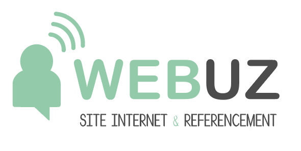

Portfolio BTS SIO SLAM
Accueil
Mes Stages
Mes Projets
Veille Tech
Mes Stages
PC-HS
27 Mai – 28 Juin 2024
Création d'un site web via WordPress.
Proximit
20 Janvier – 28 Février 2025
Découverte des bases du framework Symfony.
Voir plus

Webuzz
05 Janvier – 13 Février 2026
Création d'un site web via WordPress.
Voir plus
×